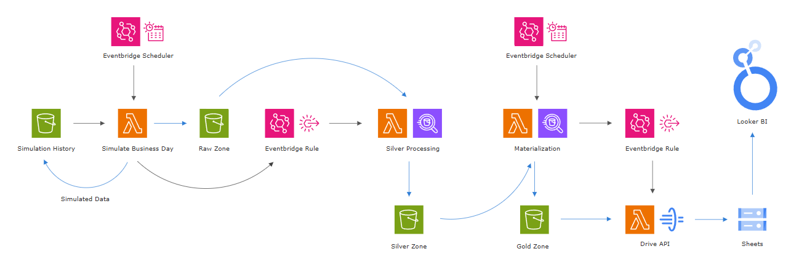

LAKEHOUSE TEST PREP SERVICES
BACKGROUND
This platform demonstrates a production-oriented analytics system built under realistic business and technical constraints. A Python-based simulation generates daily operational data for a tutoring company, with client acquisition, seasonality, and churn dynamics calibrated from firsthand experience operating an education business between 2016 and 2023.
The system models end-to-end data flow from transactional-style event generation through analytical modeling. It reflects patterns I originally implemented in MySQL to support live operations, re-architected here at greater scale using AWS. The result is a domain-informed OLTP-to-OLAP pipeline designed to emphasize data quality, analytical usability, and cost-aware architecture.
The GitHub repo with a README for this project is available at https://github.com/peachy22/tutor-testprep-lakehouse. A lightweight analytics layer with live data originating from the AWS pipeline is embedded here along with a high-level orchestration overview.
OPERATIONAL OVERVIEW
Here, interactive Looker dashbaords are embedded which reflect the most recent gold artifact materialization. The underlying data is generated by a business simulation designed to mirror real-world operational dynamics observed in a test preparation services context. The intent is not to optimize outcomes, but to model realistic constraints and behaviors.
All simulation behaviors are provided in the project README, but key modeled assumptions include:
• The business primarily serves year-round standardized test preparation clients (e.g., SAT), which represent the largest and most stable segment.
• Most students attend approximately one session per week, with frequent cancellations; sessions canceled with sufficient notice are not billed.
• Academic support clients tied to regular coursework decline sharply during summer months and moderately during winter breaks.
• Students exhibit a meaningful probability of returning in subsequent academic years until graduation.
• Tutors are contracted with flexible subject coverage, but are capped at a maximum active student load.
• Client and tutor onboarding rates are seasonal, peaking in the fall, in addition to increasing gradually overall as the business matures.
The Active Students Dashboard answers a single question:
What is the current composition of our active student population, and how does demand by subject and grade align with available tutor capacity and specialization?
This view provides a current-state snapshot of active students segmented by subject, grade level, and key demographic attributes, alongside tutor supply and declared instructional coverage. It is intended to surface imbalances between demand and capacity that may affect near-term staffing, scheduling, and acquisition priorities.
The Revenue Cycle Analytics tool addresses a complementary question:
How are revenue, tutor labor utilization, and client onboarding and churn trending over time, and what do these trends indicate about overall business health?
Metrics are aggregated at a monthly grain and include revenue, tutor utilization weighted by hourly pay, and student onboarding and churn. Together, these measures describe the business’s unit economics and operational trajectory rather than isolated performance indicators.
ETL ARCHITECTURE SUMMARY
The primary objective is to translate raw, transactional-style data into analytically useful, well-modeled datasets that support reporting, dashboards, and downstream decision-making. To this end, the pipeline follows a layered lakehouse architecture deployed on AWS-managed services:
• Raw (Bronze) – Synthetic OLTP-style CSV data landed in S3
• Silver – Cleaned, conformed, and relationally consistent tables in Athena
• Gold – Analytics-ready fact and dimension tables, plus business-facing aggregates

Processing is orchestrated using AWS Lambda and EventBridge, with Athena acting as the serverless SQL execution layer for analytical transformations. While the core pipeline is AWS-native, curated gold-layer artifacts are exported to Google Cloud via the Drive API, decoupling analytical compute from downstream consumption. The BI layer is served in Looker, reflecting a common enterprise pattern where analytics products must integrate with pre-existing reporting ecosystems.
For higher-concurrency or latency-sensitive workloads, this architecture would naturally evolve toward a dedicated warehouse such as Redshift paired with an AWS-native enterprise BI tool like Quicksight; Athena + Looker is used here deliberately to emphasize cost efficiency, elasticity, and operational simplicity under moderate analytical load.